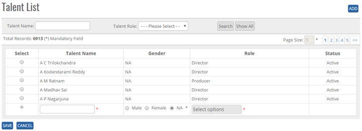
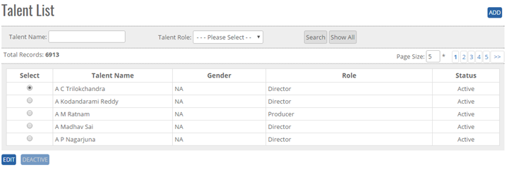


	<section>
		<article>
			<h2>Talent<span></span></h2>
			<div>
				<p></p>
				

				<p>Talent Module comes under Commercial Module. It can be accessed by user who has rights for this module.</p>

				<p>Talent module - where user can add/update the name of director, producer, star, choreographer etc</p>

				<p><b>ADD New Talent in the master</b> </p>

				<p>Go To>>Master>>Commercial>>Talent >><b>ADD</b></p>

				<p>Click Add Button on top right corner of the page as shown in the figure and the following page will be open as shown in below image</p>

				<p><b>To ADD Talent in the system, system will be having following fields</b></p>

				<p>- User can enter Talent name in Text Box (alphanumeric is valid)</p>

				<p>- User can select Single/Multiple Role from list Box </p>

				<p>- User can select from Radio button (as option) "Male" Or "female" Or "NA"</p>

				<p>- Below in image can see the Save and Cancel button </p>
				 
				<p><b>Note:</b> By default Talent status will show ACTIVE</p>

				<div class="triangle-border top">
					
				</div>


				<p>- Click on save button user will get alert message <b>"Talent Record Updated successfully"</b>.</p>

				<p>- `Click on Cancel Button, the Record will not get updated.</p>

				<p><b>Modifying Existing Talent</b></p>

				<p>The user who has right to edit can edit the existing Talent list </p>

				<p>Go To>>Master>>Commercial>>Talent>>Search Talent>>Click Radio Button (Talent Name)>>EDIT</p>

				<p><b>Note:</b> By default Talent status will show ACTIVE </p>

				<p>System will allow to edit all talents Details. Click on save button user will get alert message <b>"Record Added successfully"</b> as shown in below image.</p>

				<p>Click on Cancel Button, the Record will not get updated.</p>

				<div class="triangle-border top">
					
				</div>


				<p><b>De Activate/ Activate Existing Talent</b></p>

				<p><b>DeActive</b> - Click on Deactivate Button, once the button is clicked it will ask confirmation message "Are you sure you want to Deactivate this record" with "OK and cancel" button.</p>

				<p>If user clicks on OK Button, record will get deactivated and if clicked on Cancel, record will not get deactivated.</p>

				<p><b>Active</b> - Same way once a record is deactivated, system will show Active button. If user clicks on Active button, record will get activated.</p>


				<p><b>Search / Show All Criteria</b></p>

				<p>- User can search the Talent name and then click on <b>Search</b>, it will show the result as per the search criteria. User can search name by single alphabet.</p>

				<p>- If user want to check all Talent name then click on <b>Show All</b> Button. It will show the list.</p>

				<p>- If user want to search Talent role then, user can select any one role and click on search, it will give list of talent role  </p>

				<p>- Click on page no, System will navigate the desired page, per page 10 records will be displayed. </p>
			</div>
		</article>
	</section>